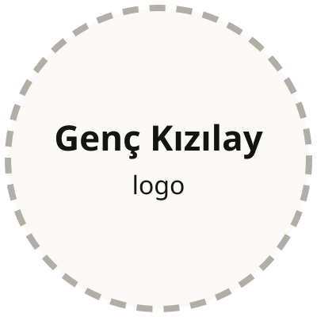
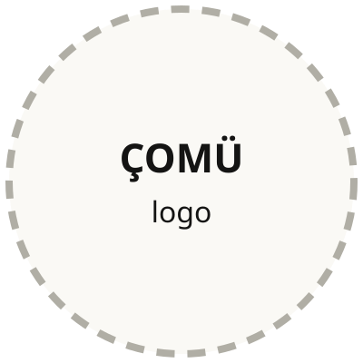

Genç Kızılay ÇOMÜ · Yapay Zeka Eğitimleri · Hafta 1
Claude ile Tanışma
Teknik Bilimler MYO · Lab3 · 1 Aralık 2026
Bugün ne yapacağız?
- Claude'a girip ilk sohbetimizi yapacağız
- İyi soru sormayı öğreneceğiz
- Cevabı kontrol etmeyi ve güvenli kullanmayı öğreneceğiz
💡 Bugün dinlemekten çok yapacağız. Takılırsan el kaldır!
Isınma sorusu 🤔
Bu sunumu kim hazırladı?
Yapay zekayı nerede gördünüz?
- Telefonda, sosyal medyada, haberlerde...
- Hiç kullanmadıysan da sorun yok!
1. Adım: Bilgisayara giriş
- Açılan giriş sayfasına TC kimlik no yaz
- UBYS şifreni yaz
- Giriş'e tıkla
2. Adım: Claude'a giriş
- Adres çubuğuna claude.ai yaz
- Hesabını nasıl açtıysan öyle gir (Google veya e-posta)
- Mesaj kutusunu görüyorsan tamam ✋
3. Adım: Claude ekranını tanı
- Mesaj kutusu: buraya yazarsın
- Gönder: ok düğmesi ya da Enter
- Yeni sohbet: sol üstteki düğme
✋ Sıra sizde · 3 dakika
İlk mesajını gönder
Merhaba, benim adım ___. Kendini bana 3 cümlede tanıt.
Claude nedir?
Claude, Anthropic şirketinin geliştirdiği bir yapay zeka asistanıdır.
- Çok büyük miktarda metin okuyarak dili öğrendi
- Sorunu anlar, cevabı yazarak üretir
🧠 Benzetme: Çok okumuş ama bazen kendinden fazla emin bir arkadaş
Neler yapabilir, nelere dikkat?
✅ Yapabilir
- Metin yazar, düzeltir
- Özetler, açıklar, çevirir
- Fikir ve liste üretir
⚠️ Dikkat
- Yanılabilir, uydurabilir
- Her şeyi bilmez
- Son karar ve sorumluluk sende
Boşluğu doldur ✍️
Claude bir yapay zeka .
Claude da yapabilir, bu yüzden cevabı ederim.
İyi istemin formülü
💬 İstem = Claude'a yazdığın mesaj. Ne kadar net anlatırsan, o kadar iyi cevap alırsın.
Hangisi daha iyi?
B ✅
Genç Kızılay için kan bağışı kampanyasına çağıran 3 cümlelik samimi bir Instagram duyurusu yaz.
B neden daha iyi?
✋ Sıra sizde · 6 dakika
Farkı kendin gör
1️⃣ Önce A'yı gönder:
Kızılay yaz
2️⃣ Yeni sohbet aç, B'yi gönder:
Genç Kızılay için kan bağışı kampanyasına çağıran 3 cümlelik samimi bir Instagram duyurusu yaz.
Beğenmedin mi? Sohbete devam et 💬
İlk cevap bir taslaktır. Aynı sohbette düzeltmesini iste:
Daha kısa yap
Daha resmi yaz
Emoji ekle
Yeniden başlamana gerek yok, Claude önceki mesajları hatırlar.
✋ Sıra sizde · 5 dakika
Cevabı 2 kez düzelttir
B'nin cevabının altına sırayla yaz:
Daha kısa yap ve 2 emoji ekle.
Şimdi daha resmi bir dille yaz.
Formülü tamamla ✍️
İyi istem: için? + ? + ?
İlk cevabı beğenmezsem ederim.
Mola ☕
5 dakika sonra devam ediyoruz. Bilgisayarı kapatma!
Claude da yanılabilir
Bazen kendinden emin bir şekilde yanlış bilgi verebilir.
- Özellikle tarih, sayı, isim ve kaynaklarda
- Önemli bilgiyi başka bir kaynaktan kontrol et
🧠 Hatırla: çok okumuş ama bazen kendinden fazla emin bir arkadaş
Hatayı bul 🔍
Claude'dan şöyle bir cevap geldiğini düşünün:
Türk Kızılay 1923 yılında kuruldu. Afetlerde barınma ve beslenme desteği verir, kan bağışı çalışmaları yürütür.
❌ 1923 değil → ✅ 1868 (Osmanlı döneminde, İstanbul'da kuruldu)
🚫 Claude'a asla yazma
Kişisel bilgiler
- TC kimlik no
- Telefon, adres
- Şifreler
Kızılay'da
- Afetzedelerin bilgileri
- Bağışçıların sağlık bilgileri
- Gönüllülerin iletişim bilgileri
Kural: "Bunu bir yabancıya söyler miydim?" Hayırsa yazma.
Hangisini Claude'a yazabilirim?
✋ Sıra sizde · 8 dakika
Kızılay görevi 🚑
Birini seç, formülü kullan (Kim için + Ne + Nasıl):
🎒 Deprem çantası kontrol listesi
🤝 Yeni gönüllüye hoş geldin mesajı
Örnek: Genç Kızılay gönüllüleri için deprem çantasına konacak 10 maddelik kısa bir kontrol listesi hazırla.
Sonuçlarımızı paylaşalım 🎤
- 2–3 gönüllü sonucunu sesli okusun
- İstemine ne yazdın?
- Sonradan neyi düzelttirdin?
Çıkış quizi 🏁
1. İyi istem: Kim için + Ne +
2. "Claude'un cevabı her zaman doğrudur."
3. Afetzedelerin bilgilerini Claude'a .
Bugün öğrendiklerimiz ✅
- Claude'a girip sohbet etmek
- Kim için + Ne + Nasıl ile iyi istem yazmak
- Cevabı kontrol etmek, kişisel veriyi paylaşmamak
📅 Gelecek hafta: Claude ile Yazmak (dilekçe, duyuru, e-posta)
Teşekkürler! 🙌
🎓 Katılım belgeleri Genç Kızılay ÇOMÜ tarafından iletilecek.
🔒 Çıkmadan önce Claude'dan ve Google hesabından çıkış yap!

Sunuma tekrar bak